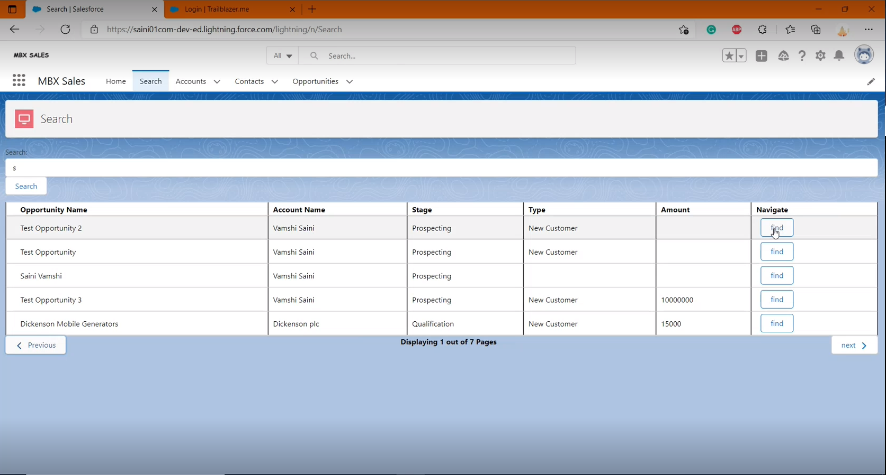
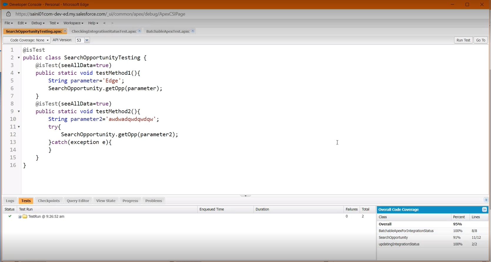

The purpose of this project is to build a search engine for sales executives who can search thier
prospective
accounts and contacts from the salesforce application. The search engine is implemented using
Salesforce Administration, Apex programming
language, Lightning Web Components, Salesforce Object Query Language. Along with the building of
search engine, other features like
pagination, navigation, report dashboard are also implemented for easy accessability which will
improve the executives productivity.
To implement the above mentioned functionalities, I used salesforce administration tools like
data import, object manager, lookup and master relationships,
and others to set up data and the required conditions. Finally to make sure the work is done
with quality, I used test classes and debugging concept to test the code coverage and the
potential errors.
Search Engine, Pagination, Navigation

Test Coverage

Reprts and Dashboard
Concepts used
➢Creation of custom objects and fields using object manager
➢Using lookup and master relationships to create parent child relationships
➢Creating profiles and using permission sets to maintain data integrity. This will not allow the
users to access
other sales executive records.
➢ Apex programming to implement the search functionality by taking input and retrieving data from
database and to test the created apex classes to ensure code coverage
➢ SOQL to query data from the database
➢ Lighning web components to design the UI
➢ Java Script to implement pagination to display 5 records per page
➢ Java Script to implement navigation to the selected record
➢ Reports and dashboards to implement data visualization
Working
As a sales executive when I logged in to the application, I want to search my potential customers
instead of going through every record.
Search engine will help me in searching the required customers by allowing me to enter thier
name in the search box. From the matching
output list I can directly navigate to the customer record page to deal with sales activity. To
make it even easier, only 5 records per
page are displayed, this will allow me to look in to the records clearly without missing any.
Apart from accessing customers, I can also
look in to the statistics and data with the help of data visualization where data is showcased
in the form of pie charts, bar graphs instead of
large and boring paragraphs.
To know more about the project please click on the link below
github